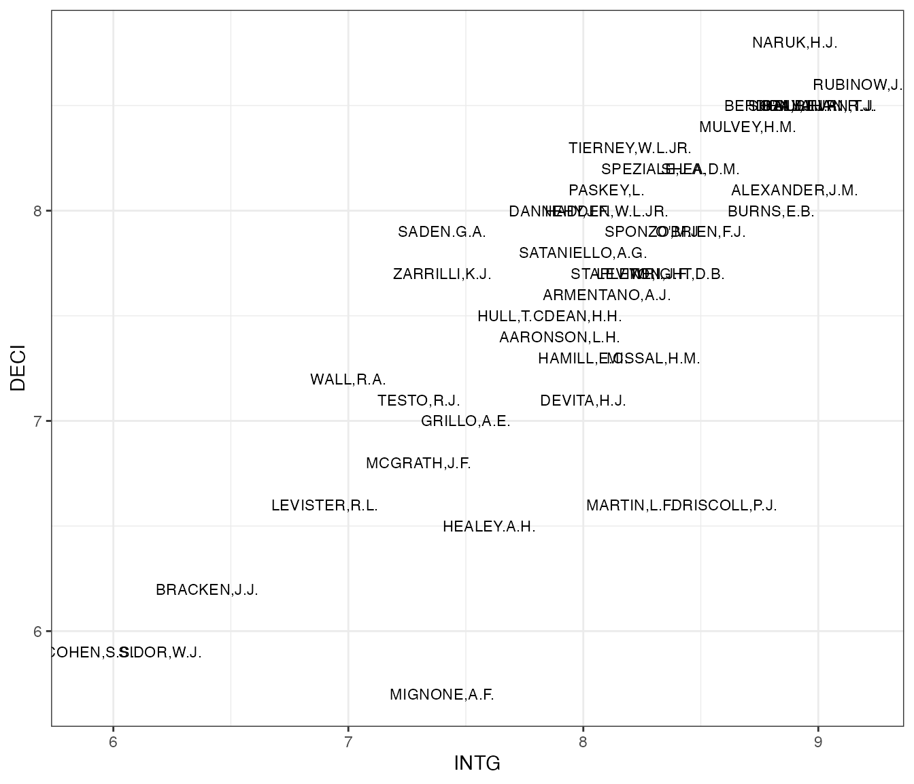
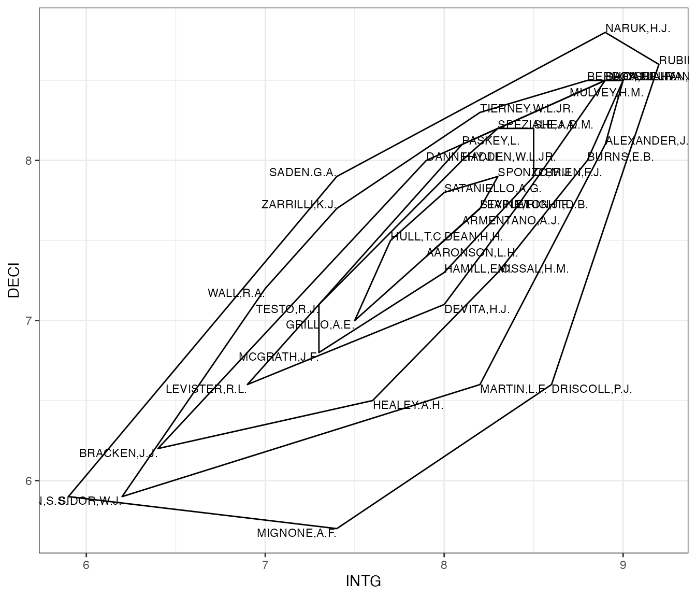
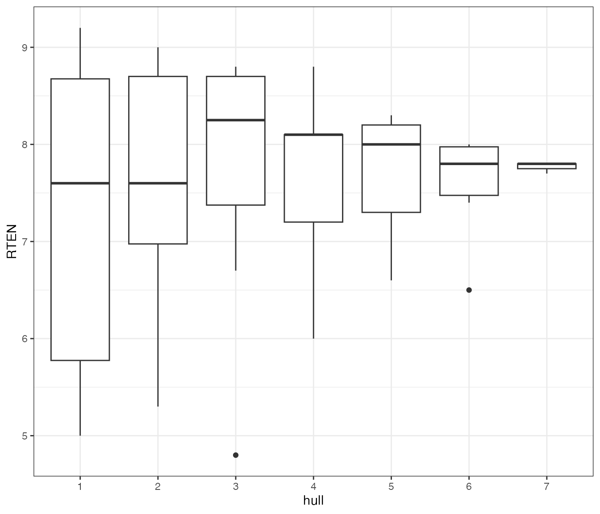
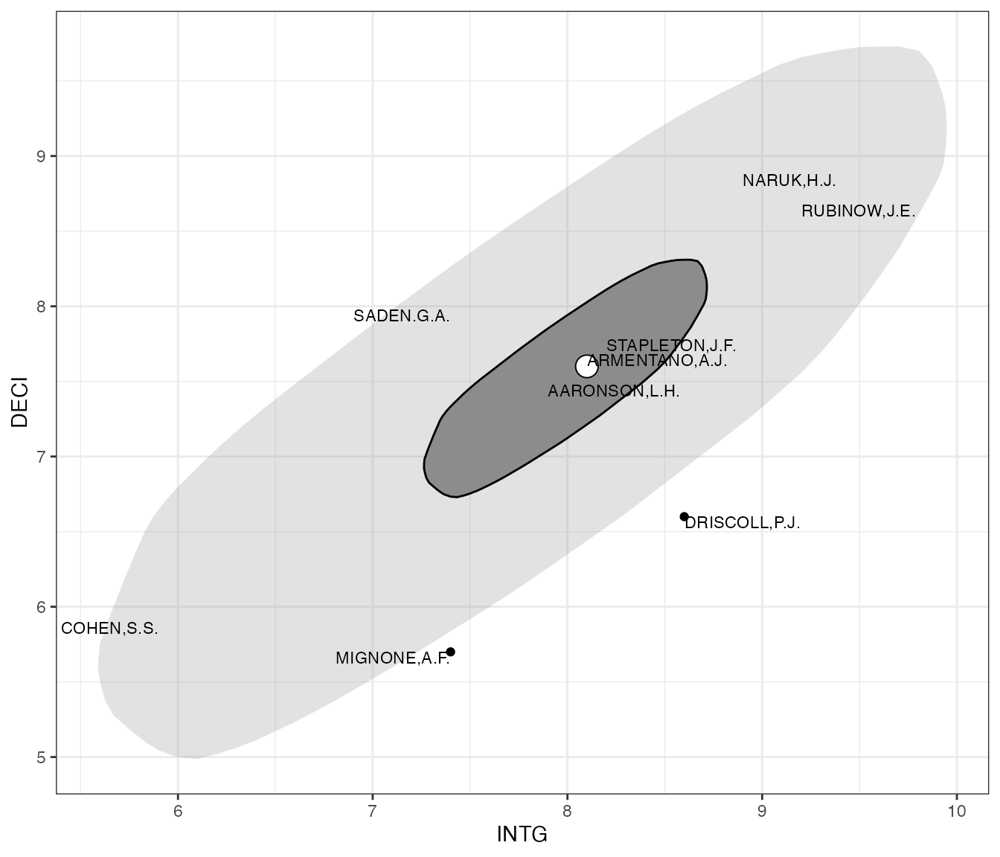
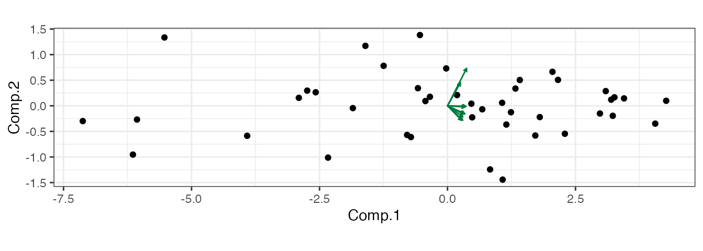
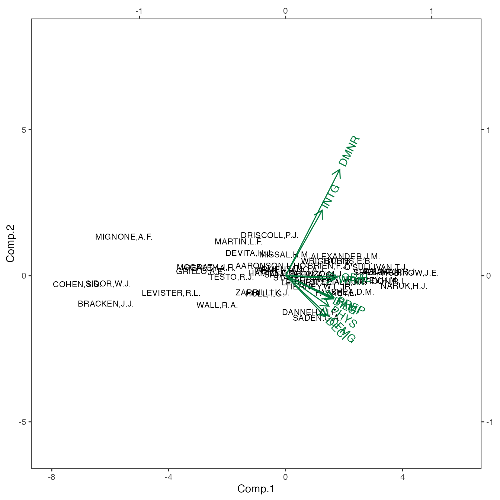
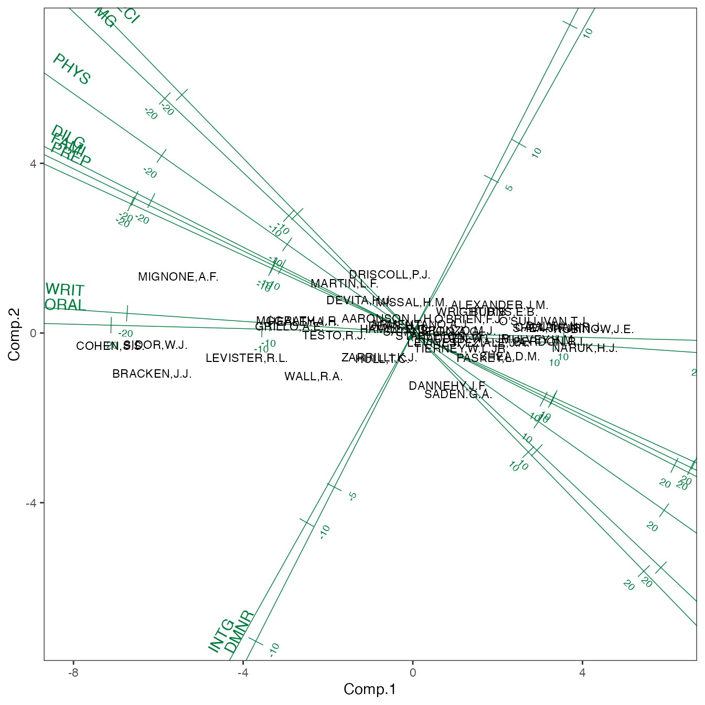
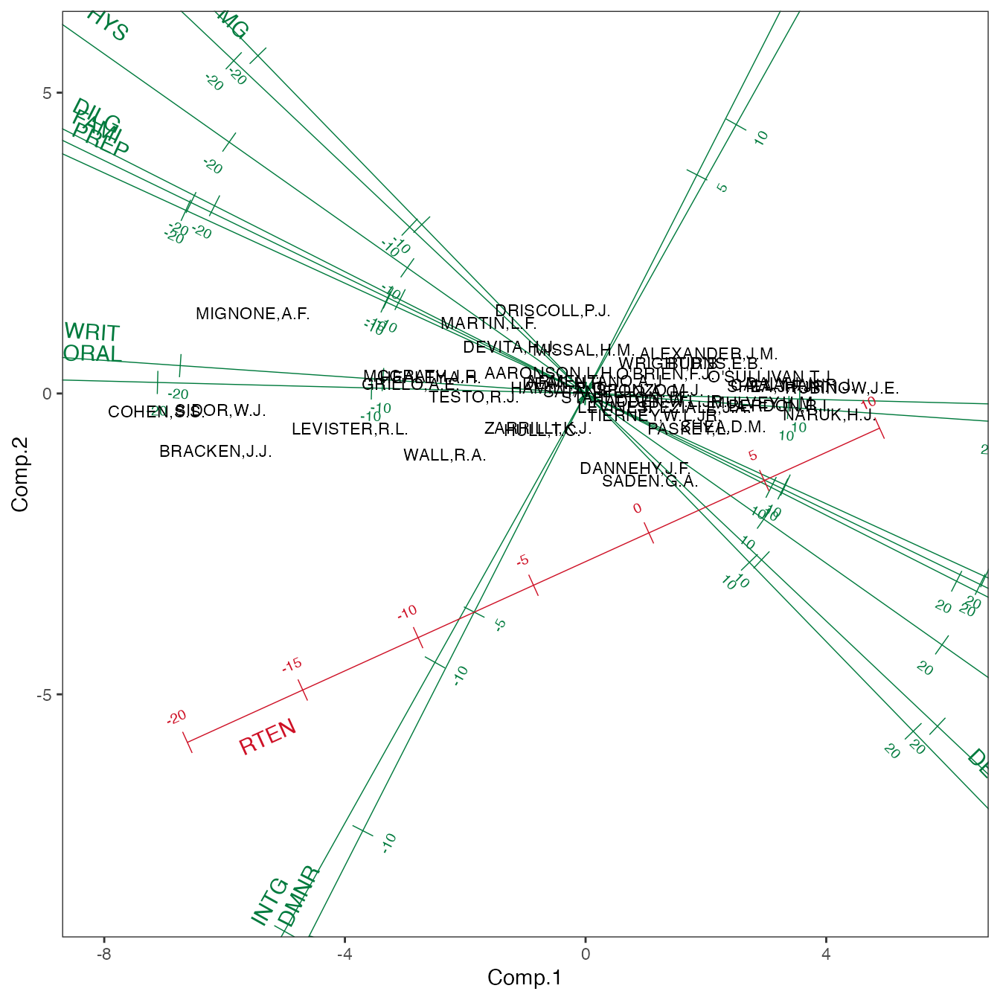

Introduction
The {gggda} package is a mostly standard-issue extension to {ggplot2}: It consists of ggprotos for a coordinate system (“coord”) and several statistical transformations (“stat”), and geographic constructions (“geom”) that almost exclusively use standard aesthetic mappings and recognizable parameters and defaults.
The coords, stats, and geoms implement a variety of tools used in multivariate data analysis. By design, tools implemented in other {ggplot2} extensions are not reinvented here—or, at least, they’re not meant to be! For example, the {ggdensity} package provides plot layers for quantile-based density estimates and contours, extending the native {ggplot2} layers for level-based density visualizations, and users are encouraged to use it in tandem with the {gggda}. As a result, though, those included in the package may seem somewhat arbitrary. That said, the plot layers provided by {gggda} implement methods that emerged from two distinct threads, which the vignette will consider in turn.
A brief caution: Some code below uses the sort_by()
function introduced
in R version 4.4.0; if that version is not yet installed, an
invisible code chunk is run that defines it from scratch.
Data
To motivate and illustrate these tools, let’s investigate the
USJudgeRatings data set included with the basic
R installation. These data were obtained from the 1977
New Haven Register and contain several lawyers’ evaluations of
43 Superior Court1 judges based, or so i infer (i have not
found a journal article citation or been able to access the newspaper
edition), on a number of interactions with them. The variables include
the (standardized) number of interactions, ratings of 10 criteria
ranging from judicial integrity to physical ability, and a final rating
of retention worthiness; the ratings all use a 10-point scale. Here are
those ratings for a sample of the judges:
print(USJudgeRatings[sample(nrow(USJudgeRatings), 6L, replace = FALSE), ])
#> CONT INTG DMNR DILG CFMG DECI PREP FAMI ORAL WRIT PHYS RTEN
#> MIGNONE,A.F. 6.6 7.4 6.2 6.2 5.4 5.7 5.8 5.9 5.2 5.8 4.7 5.2
#> DEVITA,H.J. 6.5 8.0 7.6 7.2 7.0 7.1 6.9 7.0 7.0 7.1 6.9 7.2
#> SPONZO,M.J. 6.9 8.3 8.0 8.1 7.9 7.9 7.9 7.7 7.6 7.7 8.1 8.0
#> STAPLETON,J.F. 6.5 8.2 7.7 7.8 7.6 7.7 7.7 7.7 7.5 7.6 8.5 7.7
#> SADEN.G.A. 6.6 7.4 6.9 8.4 8.0 7.9 8.2 8.4 7.7 7.9 8.4 7.5
#> BERDON,R.I. 6.8 8.8 8.5 8.8 8.3 8.5 8.7 8.7 8.4 8.5 8.8 8.7For convenience, we reformat the data with an additional column for the name of the judge:
USJudgeRatings |>
tibble::rownames_to_column(var = "NAME") ->
judge_ratings
head(judge_ratings)
#> NAME CONT INTG DMNR DILG CFMG DECI PREP FAMI ORAL WRIT PHYS RTEN
#> 1 AARONSON,L.H. 5.7 7.9 7.7 7.3 7.1 7.4 7.1 7.1 7.1 7.0 8.3 7.8
#> 2 ALEXANDER,J.M. 6.8 8.9 8.8 8.5 7.8 8.1 8.0 8.0 7.8 7.9 8.5 8.7
#> 3 ARMENTANO,A.J. 7.2 8.1 7.8 7.8 7.5 7.6 7.5 7.5 7.3 7.4 7.9 7.8
#> 4 BERDON,R.I. 6.8 8.8 8.5 8.8 8.3 8.5 8.7 8.7 8.4 8.5 8.8 8.7
#> 5 BRACKEN,J.J. 7.3 6.4 4.3 6.5 6.0 6.2 5.7 5.7 5.1 5.3 5.5 4.8
#> 6 BURNS,E.B. 6.2 8.8 8.7 8.5 7.9 8.0 8.1 8.0 8.0 8.0 8.6 8.6Multivariate summaries
The first set of methods is the extension of univariate summaries to multivariate, and usually bivariate, data. For example, univariate data have a natural ranking by value: Arrange the cases in order of a variable value, and the rank of each case is its position in order:
judge_ratings |>
subset(select = c(NAME, RTEN)) |>
sort_by(~ list(-RTEN)) |>
transform(RANK = seq(nrow(judge_ratings))) |>
head()
#> NAME RTEN RANK
#> 30 RUBINOW,J.E. 9.2 1
#> 7 CALLAHAN,R.J. 9.0 2
#> 26 NARUK,H.J. 9.0 3
#> 9 DALY,J.J. 8.8 4
#> 34 SHEA,J.F.JR. 8.8 5
#> 2 ALEXANDER,J.M. 8.7 6There’s no obvious analog to this for bivariate data: Suppose we want to rank judges by how well they maintain the legitimacy of their court. This might implicate two ratings in the data in particular, their integrity and the promptness of their decisions:
judge_plot <- ggplot(judge_ratings, aes(x = INTG, y = DECI, label = NAME))
judge_plot +
geom_text(aes(label = NAME), size = 3)
While these ratings are correlated, several individual judges were rated significantly more highly on one criterion than on the other, and there is a clear “core” of judges who received average ratings on both. In the next section we’ll see how these ratings might be combined into an aggregate; for now, we’ll consider how to rank the judges not by the values of their ratings but by their typicality or “averageness”: On this score, middling judges should be ranked highly while outlying judges should be ranked lowly. Such a measure might be useful for identifying idiosyncratic judges for recruitment to consensus working groups or even those whose rankings should be re-evaluated. Visually, this property can be captured by sequentially “peeling” outer layers of the point cloud and giving each layer the same rank. The most common way to do this is probably via convex hulls:
judge_plot +
geom_text(size = 3, hjust = "outward", vjust = "outward") +
stat_peel(num = Inf, color = "black", fill = "transparent")
#> Warning: The following aesthetics were dropped during statistical transformation: label.
#> ℹ This can happen when ggplot fails to infer the correct grouping structure in
#> the data.
#> ℹ Did you forget to specify a `group` aesthetic or to convert a numerical
#> variable into a factor?
The plot identifies Judges Saden and Driscoll, for example, as outliers, despite their average or just-below-average ratings on both criteria. The more middling judges’ names are harder to read, but we can extract the assignments directly to examine the most peripheral and core hulls:
judge_ratings |>
subset(select = c(INTG, DECI)) |>
peel_hulls(num = Inf) |>
as.data.frame() |>
merge(
transform(judge_ratings, i = seq(nrow(judge_ratings))),
by = "i"
) |>
subset(select = -c(i, x, y, prop)) |>
sort_by(~ hull + NAME) ->
judge_hulls
judge_hulls |>
subset(subset = hull %in% range(hull))
#> hull NAME CONT INTG DMNR DILG CFMG DECI PREP FAMI ORAL WRIT PHYS
#> 8 1 COHEN,S.S. 7.0 5.9 4.9 5.1 5.4 5.9 4.8 5.1 4.7 4.9 6.8
#> 13 1 DRISCOLL,P.J. 6.7 8.6 8.2 6.8 6.9 6.6 7.1 7.3 7.2 7.2 8.1
#> 23 1 MIGNONE,A.F. 6.6 7.4 6.2 6.2 5.4 5.7 5.8 5.9 5.2 5.8 4.7
#> 26 1 NARUK,H.J. 7.8 8.9 8.7 8.9 8.7 8.8 8.9 9.0 8.8 8.9 9.0
#> 30 1 RUBINOW,J.E. 7.1 9.2 9.0 9.0 8.4 8.6 9.1 9.1 8.9 9.0 8.9
#> 31 1 SADEN.G.A. 6.6 7.4 6.9 8.4 8.0 7.9 8.2 8.4 7.7 7.9 8.4
#> 1 7 AARONSON,L.H. 5.7 7.9 7.7 7.3 7.1 7.4 7.1 7.1 7.1 7.0 8.3
#> 3 7 ARMENTANO,A.J. 7.2 8.1 7.8 7.8 7.5 7.6 7.5 7.5 7.3 7.4 7.9
#> 38 7 STAPLETON,J.F. 6.5 8.2 7.7 7.8 7.6 7.7 7.7 7.7 7.5 7.6 8.5
#> RTEN
#> 8 5.0
#> 13 7.7
#> 23 5.2
#> 26 9.0
#> 30 9.2
#> 31 7.5
#> 1 7.8
#> 3 7.8
#> 38 7.7Judges Aaronson, Armentano, and Stapleton constitute the innermost hull, and again the density of the core makes it difficult to build intuition about this stratification. We can, for example, check whether peripherality with respect to the nested hulls is systematically related to overall retention rating:
judge_hulls |>
transform(hull = factor(hull, levels = seq(max(hull)))) |>
ggplot(aes(x = hull, y = RTEN)) +
geom_boxplot()
While the fewer data in each hull yield narrower boxplots, there is no evident upward or downward trend. But peeling data from the outside inward is not the only way to stratify by centrality. Another approach is is called data depth, based on a family of notions of global depth that are distinct from local notions of density. One of the most famous deployments of data depth is the “bag-and-bolster plot” comprising a “bag” delineated by a depth contour and a “fence” by expanding the bag outward from the depth median. As with a box-and-whisker plot, markers outside the fence identify outliers. In the bag-and-bolster plot below, we used trial and error to customize the fraction contained in the bag and the scale factor of the fence, add text labels to the judges of the outermost and innermost hulls:
judge_plot +
stat_bagplot(fraction = 1/3, coef = 3) +
geom_text(
data = subset(judge_hulls, hull %in% range(hull)),
size = 3, hjust = "outward", vjust = "outward"
)
#> Warning: The following aesthetics were dropped during statistical transformation: label.
#> ℹ This can happen when ggplot fails to infer the correct grouping structure in
#> the data.
#> ℹ Did you forget to specify a `group` aesthetic or to convert a numerical
#> variable into a factor?
For these data, the two stratifications are broadly consistent. However, the data seem to have a greater skew toward lower values on the periphery than in the core, resulting in Judges Naruk and Rubinow lying well within the fence while Judges Cohen and Mignone lie near its boundary, despite all four belonging to the outermost hull.
Ordination and biplots
The second set of methods enables analysis of many variables at once. These ordination models typically use linear algebra to obtain a sequence of artificial coordinates, each of which captures the most desired behavior after adjusting for the previous. In the most popular ordination model, principal components analysis, the principal components (PCs) account for the maximum amount of inertia, or multidimensional variance in each successive residual subspace.
PCA is often applied to heterogeneous data, which requires that the variables be rescaled to have common variance. In this case, however, each criterion is rated on the same scale, so the simplifying assumption that their distributions (specifically their variances) are equivalent in the population is plausible.
As a technique for dimension reduction, PCA works best when the variables are highly dependent—not necessarily pairwise correlated, but such that the low-dimensional subspace coordinatized by the first few PCs contains a large share of the inertia. The componentwise variance and cumulative inertia are reported in the summary. We also examine the variable loadings onto the PCs, which allow us to interpret the PCs as latent variables (as in factor analysis, though the theoretical justification is weaker and their meanings are less straightforward).
summary(judge_pca)
#> Importance of components:
#> Comp.1 Comp.2 Comp.3 Comp.4 Comp.5
#> Standard deviation 2.7951637 0.60340001 0.46035803 0.272421916 0.170365235
#> Proportion of Variance 0.9158885 0.04268141 0.02484389 0.008699859 0.003402437
#> Cumulative Proportion 0.9158885 0.95856994 0.98341383 0.992113689 0.995516126
#> Comp.6 Comp.7 Comp.8 Comp.9
#> Standard deviation 0.121735488 0.111429240 0.0726587640 0.0616838629
#> Proportion of Variance 0.001737251 0.001455548 0.0006188767 0.0004460374
#> Cumulative Proportion 0.997253377 0.998708925 0.9993278015 0.9997738389
#> Comp.10
#> Standard deviation 0.0439232932
#> Proportion of Variance 0.0002261611
#> Cumulative Proportion 1.0000000000
print(judge_pca$loadings)
#>
#> Loadings:
#> Comp.1 Comp.2 Comp.3 Comp.4 Comp.5 Comp.6 Comp.7 Comp.8 Comp.9 Comp.10
#> INTG 0.250 0.447 0.135 0.464 0.650 0.157 0.236
#> DMNR 0.370 0.727 -0.171 0.214 -0.295 -0.385 -0.132
#> DILG 0.308 -0.156 0.301 0.335 0.590 -0.393 0.145 -0.379
#> CFMG 0.292 -0.277 0.509 -0.155 0.342 -0.614 -0.241
#> DECI 0.272 -0.281 0.387 -0.391 0.115 0.685 0.201 0.144
#> PREP 0.332 -0.152 0.220 -0.146 -0.328 -0.252 0.638 0.312 0.336
#> FAMI 0.328 -0.159 0.224 -0.491 0.160 -0.511 -0.525
#> ORAL 0.356 -0.234 -0.135 0.133 -0.163 -0.371 0.701 -0.355
#> WRIT 0.337 0.152 -0.306 -0.221 0.137 -0.433 -0.206 0.683
#> PHYS 0.296 -0.209 -0.860 -0.149 0.297
#>
#> Comp.1 Comp.2 Comp.3 Comp.4 Comp.5 Comp.6 Comp.7 Comp.8 Comp.9
#> SS loadings 1.0 1.0 1.0 1.0 1.0 1.0 1.0 1.0 1.0
#> Proportion Var 0.1 0.1 0.1 0.1 0.1 0.1 0.1 0.1 0.1
#> Cumulative Var 0.1 0.2 0.3 0.4 0.5 0.6 0.7 0.8 0.9
#> Comp.10
#> SS loadings 1.0
#> Proportion Var 0.1
#> Cumulative Var 1.0The PCA summary shows that the vast majority of the variance (92%) already lies in a single dimension, along the first PC, and that roughly half of the remainder (4%) lies along the second; 96% lies within the plane of the first two PCs and would therefore be visualized in a plot using them as axes. The loadings suggest that some of the ratings (diligence, soundness of oral and written rulings) align more closely with PC1 and some (integrity and demeanor) with PC2, while others (management of case flow, promptness of decisions, physical ability) are similarly aligned with both.
These insights can be efficiently visualized by plotting the cases (judges) and for the variables (criteria) on the plane defined by the first two PCs. The quality of the resulting biplot depends on the proportion of variance along those PCs. In the biplot below, the cases are represented by circular markers and the variables by arrows, using a geometric construction provided by {gggda}. The aspect ratio is fixed at 1 to avoid misrepresenting the inertia.
ggplot(mapping = aes(x = Comp.1, y = Comp.2)) +
geom_point(data = judge_pca$scores) +
geom_vector(data = unclass(judge_pca$loadings), color = "#007a3d") +
coord_equal()
The plot makes clear the singular importance of PC1: Indeed, all rating scales load positively onto it, so it could be interpreted as a dimension of overall quality. It is also clear that most of the criteria are tightly correlated into two roughly orthogonal groups, though these groups don’t line up perfectly with the two PCs. (A rotation might be applied that would improve the “simple structure” of the PCA, but that is beyond the scope of this introduction.) However, the plot is limited in several ways: We can’t tell which marker represents which judge or which arrow represents which criterion, and the quiver of arrows is quite small due to the different scales of the cases and the variables.
In the code chunk below, we pre-process the scores and loadings into
data frames with additional variables and use these variables to improve
the annotations. (Notice our clever double-use of NAME for
cases and variables, which allows us to distribute the aesthetic
label = NAME across both layers.) We also remove gridlines
from the theme since the PCs are not themselves meaningful, and we use a
new coordinate system that expands the plotting window to a square while
holding the aspect ratio fixed. Finally, we rescale the variables to be
distinguishable at the same scale as the cases and add additional axis
legends for this new scale.2
judge_pca$scores |>
as.data.frame() |>
transform(NAME = judge_ratings$NAME) ->
judge_scores
judge_pca$loadings |>
unclass() |> as.data.frame() |>
tibble::rownames_to_column(var = "NAME") ->
judge_loadings
ggplot(mapping = aes(x = Comp.1, y = Comp.2, label = NAME)) +
geom_text(data = judge_scores, size = 3) +
geom_vector(data = judge_loadings, color = "#007a3d",
stat = "scale", mult = 5) +
theme(panel.grid = element_blank()) +
coord_square() +
scale_x_continuous(sec.axis = sec_axis(~ . / 5)) +
scale_y_continuous(sec.axis = sec_axis(~ . / 5)) +
expand_limits(x = c(-8, 6))
The arrows communicate the directions and magnitudes of each rating’s associations with the two PCs. For example, the contribution of demeanor to separating judges like Saden on one side of the overall quality axis (PC1) and Driscoll on the other is at least half again that of integrity. However, this information is impressionistic, and the plot reveals little else. An alternative geometric construction allows for easier interpretation: calibrated axes—basically, lines containing the vectors with tick marks at regular multiples of them.3
ggplot(mapping = aes(x = Comp.1, y = Comp.2, label = NAME)) +
geom_axis(data = judge_loadings, color = "#007a3d") +
geom_text(data = judge_scores, size = 3) +
theme(panel.grid = element_blank()) +
coord_square() +
expand_limits(x = c(-8, 6))
Axes obviate the need for rescaling and provide more space to compare the variables’ contributions. We can now see from the plot that every rating other than demenear and integrity contributes similarly to the spread, in terms of strength as well as of direction. Yet within this similarity there are clusters: Soundness of oral and of written rulings are closely aligned, as are management of case flow and promptness of decisions, while diligence, legal familiarity, and trial preparation are essentially indistinguishable.
Axes also provide a natural way to interpolate additional variables onto an existing biplot, much as additional cases can be: We omitted worthiness of retention ratings from this analysis because it was less objective a criterion, but we can regress its values on the first two PCs to get a sense of how it relates to the picture they paint:
judge_ratings |>
subset(select = RTEN) |>
cbind(judge_scores) |>
lm(formula = RTEN ~ Comp.1 + Comp.2) ->
judge_lm
summary(judge_lm)
#>
#> Call:
#> lm(formula = RTEN ~ Comp.1 + Comp.2, data = cbind(subset(judge_ratings,
#> select = RTEN), judge_scores))
#>
#> Residuals:
#> Min 1Q Median 3Q Max
#> -0.51408 -0.08375 -0.01568 0.09951 0.35963
#>
#> Coefficients:
#> Estimate Std. Error t value Pr(>|t|)
#> (Intercept) 7.602326 0.024394 311.652 < 2e-16 ***
#> Comp.1 0.383507 0.008727 43.944 < 2e-16 ***
#> Comp.2 0.174093 0.040427 4.306 0.000105 ***
#> ---
#> Signif. codes: 0 '***' 0.001 '**' 0.01 '*' 0.05 '.' 0.1 ' ' 1
#>
#> Residual standard error: 0.16 on 40 degrees of freedom
#> Multiple R-squared: 0.9799, Adjusted R-squared: 0.9789
#> F-statistic: 974.8 on 2 and 40 DF, p-value: < 2.2e-16Retention worthiness depends importantly on both PCs, though more
strongly on the first, indicating that it is more closely related to the
first “overall quality” dimension than to the second associated more
with demeanor and integrity—though both associations are positive. We
superimpose a ruler for this effect on the biplot and offset it from the
point cloud using the referent parameter, which accepts
data in the same format as data and pre-processes it in the
same way:
judge_lm |>
coefficients() |>
t() |> as.data.frame() |>
transform(NAME = "RTEN") ->
judge_coef
ggplot(mapping = aes(x = Comp.1, y = Comp.2, label = NAME)) +
geom_axis(data = judge_loadings, color = "#007a3d") +
geom_text(data = judge_scores, size = 3) +
stat_rule(data = judge_coef, referent = judge_scores, color = "#ce1126") +
theme(panel.grid = element_blank()) +
coord_square() +
expand_limits(x = c(-8, 6))
It is perhaps surprising that demeanor and integrity exert such a significant (counterclockwise) pull on retention worthiness in relation to the first PC, given the larger number of criteria whose ratings tug in the opposite direction. This has the effect of positioning Judge Driscoll similarly to Judge Saden, despite Saden’s higher rating on every other criterion.4 Indeed, Judge Driscoll was rated slightly more retention-worthy:
Outroduction
In closing, a few elements of practice are worth making explicit: First, multivariate data visualization is a component of multivariate data analysis, not a standalone option for it. Visualizations can elicit patterns but are no substitute for rigorously confirming them. Second, data may be multivariate in different ways that call for different analytic and graphical approaches. Other multivariate data may involve incommensurate variables unsuited for unscaled PCA, for example.
Finally, multivariate graphics are highly versatile. This is a feature from the perspective of communication but has a double-edge with respect to the design of an analysis toward a specific task (question, hypothesis, objective): At the outset, the analyst must choose (not to say pre-register, but not not to say that) settings that are appropriate to the data and the task, and as the analysis progresses they must balance an adaptability to revealed patterns with a rigor toward the theory behind the task and the original analysis plan. The larger {ggplot2} extension family provides several additional tools for multivariate data visualization to both facilitate and complicate your efforts.